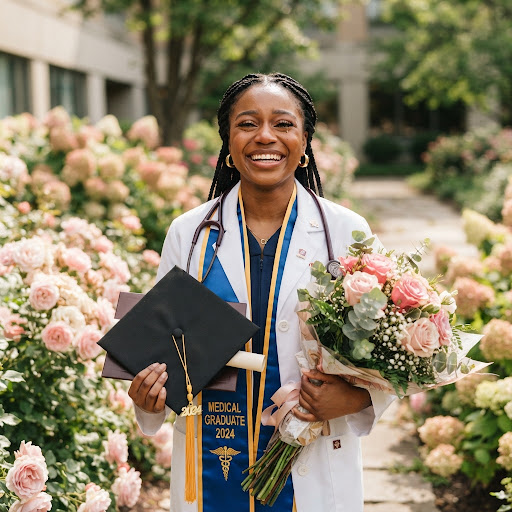
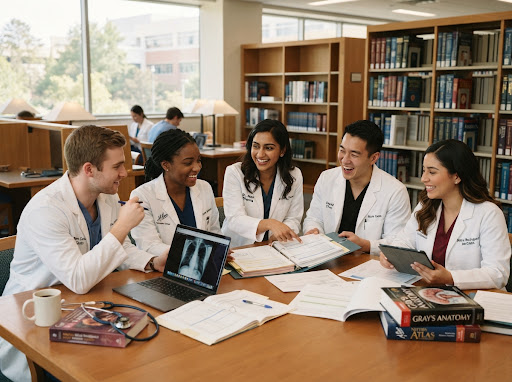

✿ Commemorative album ✿
Beautiful Memories 📸
Moments of triumph, friendship, and the road to the white coat. Tap a photograph to see it in full.


✉ A message from the heart ✉
To Dr. Zamzam Mohamed Husein
Dear Zamzam,
Today is more than a graduation day. It is the celebration of every late night, every difficult exam, every challenge you overcame, and every moment you chose not to give up.
“You dreamed of it. You worked for it. Today you can finally say—
I DID IT.”
Your journey through Medicine has only been the beginning. May the knowledge you gained become a source of healing, your compassion a source of comfort, and your future a source of everything you dreamed it would be.
Congratulations on this beautiful achievement.
CONGRATULATIONS, ZAMZAM! 🎓🩺
Banaadir University · Faculty of Medicine · Class of 2026